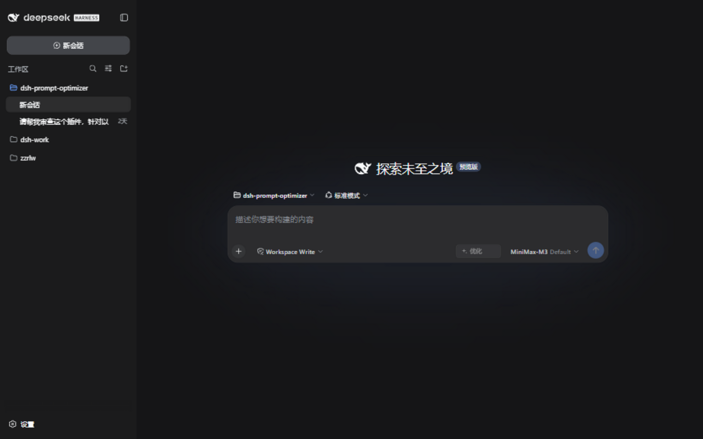
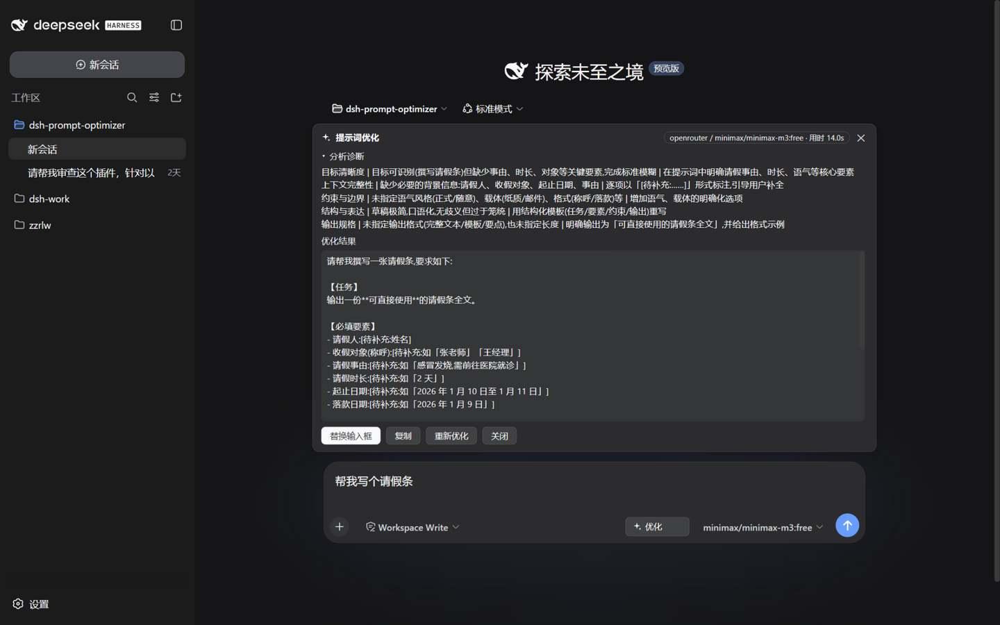
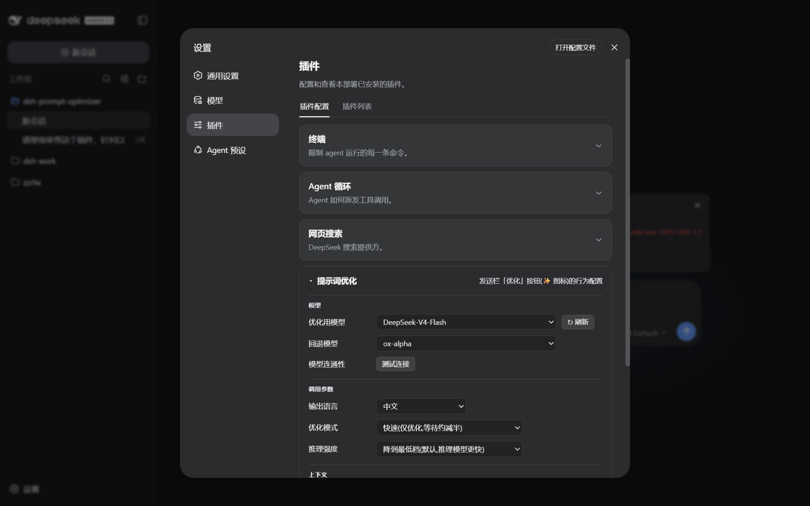

✨
一键把随手写的话
变成专业提示词
DeepSeek Harness 插件
在输入框旁点亮一个 ✨ 按钮:诊断你写的内容,重写成模型真正听得懂的话——全程流式、可撤回、不出本地。
开源 · 本地 · 免费 v0.3.12 62 项自动化测试
痛点
每个 AI 用户的日常
随手一句话,模型接不住
「帮我写个请假条」→ 模型反问三连:什么事?请几天?给谁看?
来回解释,越聊越累
补一句改一版,十轮对话过去,token 烧了一堆,还偏题。
好结果无法沉淀
某次措辞特别好,下回又从零开始,经验全在聊天记录里吃灰。

发送栏右侧的 ✨ 优化按钮(空输入时自动禁用)
dsh-prompt-optimizer · DeepSeek Harness 插件
方案
点一下 ✨,三步到位
1
写草稿
输入框里随手敲,中英文都行,哪怕只有一句话
→
2
点 ✨ 优化
实时流式输出:先五维诊断,再完整改写,逐字上屏
→
3
一键采用
替换输入框(可撤回)/ 复制 / 不满意重新优化
全程不打断心流:不弹窗、不切页面,就在你打字的那个输入框旁边。
dsh-prompt-optimizer · DeepSeek Harness 插件
实拍
一条草稿的 14 秒

五维诊断
目标/上下文/约束/结构/输出规格,逐条指出问题与建议
优化结果
结构化改写,缺失信息以 [待补充] 标出,绝不编造
路由徽章
实际用的模型与耗时,一眼可信
操作栏
替换输入框(可撤回)· 复制 · 重新优化 · 关闭
dsh-prompt-optimizer · DeepSeek Harness 插件
差异 1 · 会话感知
它读得懂你们刚才聊了什么
新会话 · 无上下文
按结构模板规范化:角色 / 任务 / 背景 / 约束 / 输出格式,缺失关键信息以 [待补充] 标出。
聊了一会儿 · 有上下文
提炼你们的真实目的,顺着草稿润色:不套模板、不重复追问已回答的内容、已否决的方向不再重提。
真实案例(社区群接龙)
草稿:帮我重新设计一下这个接龙
上下文:200 人闲置群 · 上次仅十几人参与 · 复盘:奖品差、格式乱
优化稿直接写出:群 200 余人、上次参与仅十几人、奖品吸引力不足与格式混乱的针对性方案——一个字都没多问。
dsh-prompt-optimizer · DeepSeek Harness 插件
差异 2 · 保真纪律
不是改得更花,是改得更准
✓
语义等价底线
你说过的对象、数量、范围、禁止项,一个都不许被替换、扩大或反转
✓
来源可回溯
每个具体化细节都能回溯到草稿或上下文;推断处用「如无特别说明/默认」措辞
✓
保真 > 长度
输出前逐要素自检:要素缺失比冗长更严重——先保真,再谈精炼
✓
不编造
缺失的关键信息以 [待补充:…] 标出交还给你,而不是替你做决定
这套纪律让「优化」不等于「自由发挥」——它改写表达,不篡改意图。
差异 3 · 透明可控
每一步都看得见、收得回
⌨
流式逐字上屏
诊断与改写实时流式显示,几秒出首字,不用干等转圈
Esc
取消不丢内容
生成中按 Esc,已生成的部分定格保留,可续跑或关闭
↩
替换可撤回
一键替换输入框,不满意一键撤回;改过的稿子撤回入口自动失效
🛡
错误如实透传
模型/网络错误原样呈现 + 一键重试;本地安全围栏拒绝跨站伪造请求
dsh-prompt-optimizer · DeepSeek Harness 插件
设置
所有行为,一个卡片配好

模型路由
跟随当前会话(默认)或从目录固定;主路由失败自动回退
快速模式
跳过诊断只出结果,等待约减半
上下文开关
一键关闭会话感知,只看草稿本身
实时生效
改动即存即用,折叠态显示「模型 · 模式」摘要
dsh-prompt-optimizer · DeepSeek Harness 插件
定位
同类产品很多,像这样的只有一个
|
云端优化器 |
浏览器插件 |
DSH 同类插件 |
本插件 |
| 运行位置 | 云端 API | 浏览器 | 本机 | 本机 |
| 会话上下文 | ✗ 只看一句话 | ✗ | 部分 | ✓ 全程感知 |
| 保真纪律 | ✗ 黑盒改写 | ✗ | 借鉴本插件 | ✓ 五重自检 |
| 价格 | 订阅制(标杆已宣布停服) | 免费+付费 | 免费 | 免费开源 |
品类标杆 PromptPerfect 已宣布 2026 年 9 月停服——本地、开源、上下文感知的一键优化,正是空窗。
dsh-prompt-optimizer · DeepSeek Harness 插件
安装
30 秒装好,现在就试
dsh plugin --profile web add https://github.com/Y1X1n/dsh-prompt-optimizer/releases/latest/download/dsh-prompt-optimizer.tgz
一行命令
免构建,装完重启 dsh web 即用
MIT 开源
github.com/Y1X1n/dsh-prompt-optimizer
62 项测试
双语文档 · 兼容 DSH 0.1.0/0.1.1 全线
要求:已安装 dsh CLI(npx @deepseek-ai/dsh web 可用的环境)
dsh-prompt-optimizer · DeepSeek Harness 插件
✨
让你的每一句话
都被认真对待
github.com/Y1X1n/dsh-prompt-optimizer
觉得有用的话,一个 Star 就是最好的支持 ⭐
dsh-prompt-optimizer v0.3.12 · MIT · DeepSeek Harness 0.1.0+/0.1.1